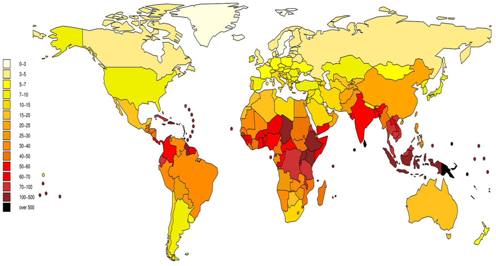

Leptospirose
Spirochétose zoonotique — Leptospira interrogans sensu lato
Zoonose sous-diagnostiquée en Suisse, pas uniquement tropicale. Forme bénigne pseudo-grippale dans 85-90 % des cas, mais la maladie de Weil (ictère + insuffisance rénale + hémorragie) est grevée d'une mortalité de 5-15 %. Le diagnostic repose sur la PCR en phase aiguë et la sérologie en phase tardive.
Épidémiologie
Situation suisse
- Maladie rare mais probablement sous-diagnostiquée : environ 5 cas/année rapportés (thèse Fiechter, Université de Genève 2020)[1]
- 3/4 des cas autochtones dans l'étude genevoise (Suisse du Sud, Tessin) — pas uniquement une maladie d'importation tropicale[1,2]
- 4 cas de leptospirose sévère ictéro-hémorragique au Tessin : insuffisance rénale dialysée, ventilation mécanique ; 3/4 contaminés en Suisse méridionale[2]
- Leptospirose canine en Suisse : incidence inhabituellement élevée (jusqu'à 28,1 cas/100 000 chiens/an), confirmant un réservoir animal actif sur le territoire helvétique[3]
- La leptospirose n'est pas à déclaration obligatoire au niveau fédéral, contribuant au sous-diagnostic et à la sous-notification
Épidémiologie européenne
- EU/EEA 2010-2021 : 12 180 cas confirmés dans 23 pays, taux moyen de notification 0,24/100 000 hab. ; augmentation de +5,0 % par an[4]
- 79 % des cas dans 5 pays : France, Allemagne, Pays-Bas, Portugal, Roumanie
- En Bretagne (France), incidence atteignant 1/100 000 en 2016 — foyer lié aux sports nautiques en eau douce, avec 14 cas chez des kayakistes[5,6]
- Danemark 2012-2021 : expositions principales identifiées — voyage à l'étranger, agriculture, et sports nautiques récréatifs (exposition émergente)[7]
⚠ Ne pas oublier les cas autochtones
En Suisse, la majorité des cas dans les séries publiées étaient autochtones (Tessin, expositions récréatives ou professionnelles). L'absence de voyage tropical n'exclut pas le diagnostic. Interroger systématiquement sur les expositions à l'eau douce, aux animaux, et aux activités de plein air.
Mortalité
Répartition géographique
Distribution mondiale, prédominance tropicale mais présente aussi en Europe tempérée. Facteurs de risque géographiques : régions humides, inondations, proximité d'élevages, zones d'eaux douces récréatives.

- Zones à haute incidence : Asie du Sud-Est, Amérique latine (Brésil), Océanie, Caraïbes, Afrique sub-saharienne
- Europe : incidence en augmentation ; foyers liés aux inondations et aux sports nautiques en eau douce
- Suisse : Tessin et Suisse romande les plus touchés ; cas sporadiques liés à l'agriculture, aux loisirs aquatiques et au contact avec des rongeurs
Transmission
- Réservoir : mammifères — rats (principal), souris, chiens, bovins, porcs, hérissons, taupes. Le rat est porteur chronique asymptomatique et excrète les leptospires dans ses urines
- Voie de transmission : contact de lésions cutanées (même minimes), de muqueuses ou de conjonctives avec de l'eau, du sol ou des aliments contaminés par l'urine d'animaux porteurs
- Plus rarement : inhalation d'aérosols contaminés, ingestion d'eau contaminée
- Pas de transmission interhumaine
Facteurs de risque
| Catégorie | Exemples |
|---|---|
| Professionnel | Agriculteurs, éleveurs, égoutiers, vétérinaires, militaires |
| Récréatif | Kayak, canyoning, triathlon en eau libre, rafting, baignade en eau douce[5,6,7] |
| Voyage | Trekking en zone tropicale, contact avec eaux d'inondation, séjour en zone rurale |
| Environnemental | Inondations, contact avec rongeurs ou animaux de ferme, jardinage |
Incubation
2-30 jours (moyenne 7-12 jours) — compatible avec les voyages courts et moyens. Interroger les expositions à l'eau douce dans les 4 semaines précédant les symptômes.[11]
Présentation clinique
Phase 1 — Septicémique (J1-J7)
- Fièvre d'apparition brutale, frissons, céphalées intenses
- Myalgies sévères, typiquement des mollets — signe distinctif par rapport aux autres causes de fièvre du retour
- Nausées, vomissements, diarrhées
- Suffusion conjonctivale (injection conjonctivale sans exsudat purulent) — signe clinique évocateur, présent dans 30-40 % des cas
- Toux sèche, douleurs thoraciques (atteinte pulmonaire précoce possible)
Phase 2 — Immune (J7-J30)
- Après une brève défervescence, rechute fébrile possible (évolution biphasique classique)
- Méningite aseptique (pléocytose lymphocytaire dans le LCR)
- Uvéite antérieure (peut survenir des semaines à mois après l'épisode aigu)
- Formes bénignes : guérison spontanée en 1-3 semaines
Formes sévères — Maladie de Weil (5-15 % des cas)
⚠ Triade classique : ictère + insuffisance rénale + diathèse hémorragique
- Ictère hépatocellulaire/cholestatique : bilirubine très élevée, transaminases modérément augmentées (≤ 5x N) — discordance bilio-transaminases caractéristique
- Insuffisance rénale aiguë non oligurique (typique) avec hypokaliémie[9]
- Thrombopénie souvent sévère avec manifestations hémorragiques
- Rhabdomyolyse (CK élevées dans > 50 % des cas)
Complications graves
- Hémorragie pulmonaire sévère (SPHS) : létalité > 50 %, mécanisme de vasculite immuno-médiée[10]
- Tamponnade cardiaque hémorragique : complication rare mais décrite[12]
- Myocardite, arythmies cardiaques
- Réaction de Jarisch-Herxheimer possible dans les 24h suivant le début de l'antibiothérapie (spirochétose) — fièvre, frissons, hypotension ; cas fatal rapporté[13]
⚠ Triade évocatrice
Fièvre + myalgies des mollets + suffusion conjonctivale chez un patient exposé à l'eau douce = penser leptospirose jusqu'à preuve du contraire. L'ictère, quand il est présent, renforce fortement la suspicion.
Biologie
| Paramètre | Anomalie typique | Commentaire |
|---|---|---|
| Bilirubine | Très élevée (conjuguée ++) | Discordance bilio-transaminases = indice fort de leptospirose |
| ASAT / ALAT | Modérément augmentées (≤ 5x N) | |
| CK | Élevées (≥ 50 % des cas) | Rhabdomyolyse — demander systématiquement |
| Créatinine | Élevée | IRA non oligurique typique + hypokaliémie |
| Natrémie / Kaliémie | Hyponatrémie, hypokaliémie | Fréquentes, aident au diagnostic différentiel |
| Thrombocytes | Thrombopénie | Variable, parfois sévère dans la maladie de Weil |
| Leucocytes | Normaux ou légèrement élevés | Pas d'hyperleucocytose franche habituellement |
| Urines | Pyurie stérile, protéinurie, hématurie microscopique | Stix urinaire = aide diagnostique peu coûteuse[14] |
| LCR (après J7) | Méningite aseptique lymphocytaire | Fréquente en phase immune |
⚠ Discordance bilio-transaminases
Bilirubine très élevée + ASAT/ALAT ≤ 5x N + insuffisance rénale + CK élevées = leptospirose probable. Dans l'hépatite virale, les transaminases sont > 10x N avec une bilirubine proportionnellement moins élevée.
Diagnostic
Stratégie selon la durée des symptômes
| Durée symptômes | Test de 1er choix | Commentaire |
|---|---|---|
| < 7 jours | PCR sang (phase septicémique) | Sensibilité élevée en phase aiguë ; cible lipL32 ou rrs ; PCR TaqMan lipL32 recommandée (spécificité 100 %, sensibilité 86 %)[15] |
| 7-14 jours | PCR urines +/- sérologie IgM | Leptospires éliminés dans les urines dès J7 ; combiner PCR + sérologie augmente le taux de détection[16] |
| > 14 jours | Sérologie (MAT ou ELISA IgM) | MAT = gold standard sérologique ; nécessite un 2e prélèvement à 2-4 semaines (séroconversion ou titre ×4) |
Tests diagnostiques en détail
- MAT (Microscopic Agglutination Test) : gold standard sérologique ; séroconversion ou augmentation ×4 du titre sur sérum de convalescence (2-4 semaines) ; ne permet pas de confirmer rapidement en phase aiguë
- ELISA IgM : sensibilité 83-96 % après J5-J7 ; plus pratique que le MAT ; faux positifs possibles (réactions croisées avec syphilis, Borrelia, maladies auto-immunes)
- PCR (sang/urines) : sensibilité 60-100 % selon le timing ; PCR TaqMan lipL32 recommandée car haute spécificité ; PCR 16S rrs à abandonner pour le diagnostic en raison de réactions croisées[15]
- Culture : très lente (semaines), peu utile en clinique aiguë ; microscopie à fond noir : faible sensibilité, déconseillée pour le diagnostic
⚠ Sérologie négative en phase aiguë
La sérologie (MAT, ELISA IgM) est fréquemment négative durant la 1re semaine de symptômes. Ne jamais exclure la leptospirose sur un seul résultat sérologique précoce négatif. Privilégier la PCR sanguine en phase aiguë (< 7 jours) et répéter la sérologie à 2-4 semaines.
Diagnostic différentiel
Dans le contexte du voyageur fébrile au retour, la leptospirose représente ~23 % des causes bactériennes de fièvre (après les rickettsioses ~50 %).
| Diagnostic | Éléments distinctifs |
|---|---|
| Paludisme | Frottis/TDR positif ; thrombopénie + anémie ; pas de myalgies des mollets typiques |
| Dengue | Thrombopénie sévère ; rash ; douleurs rétro-orbitaires ; PCR dengue/NS1 positifs |
| Rickettsiose | Escarre d'inoculation ; rash maculopapuleux ou purpurique ; fièvre boutonneuse |
| Fièvre entérique | Fièvre en plateau ; bradycardie relative ; douleurs abdominales prédominantes |
| Hépatite virale A/E | Transaminases très élevées (> 10x N) vs leptospirose (≤ 5x N) ; pas de myalgies des mollets |
| Hantavirus | IRA + thrombopénie ; contact avec rongeurs ; pas d'ictère typiquement |
Bilan minimal devant une fièvre au retour (suspicion de leptospirose)
- FSC avec formule, CRP, créatinine, ASAT/ALAT, bilirubine, CK
- Stix urinaire (protéinurie, hématurie)
- TDR + microscopie malaria (obligatoire si pays à risque)
- Test VIH 4e génération
- PCR leptospirose sang + urines si exposition compatible
Traitement
Formes légères à modérées (ambulatoire)
| Molécule | Posologie | Commentaire |
|---|---|---|
| Doxycycline (1re ligne) | 100 mg 2x/jour PO × 7 jours | Réduit significativement le temps de défervescence (MD -1,53 j vs contrôle)[17]. CI : grossesse, enfant < 8 ans |
| Azithromycine (alternative) | 500 mg/jour PO × 3 jours | Efficacité comparable (MD -1,74 j). Option pour femmes enceintes, enfants, intolérance doxycycline[17] |
| Amoxicilline (alternative) | 500 mg 3x/jour PO × 7 jours | Option pour enfants et femmes enceintes |
Formes sévères (hospitalisation obligatoire)
| Molécule | Posologie | Commentaire |
|---|---|---|
| Ceftriaxone (1re ligne) | 2 g 1x/jour IV × 7 jours | Couvre aussi la fièvre entérique (DD fréquent). 1 administration/jour. MD -1,22 j[17] |
| Pénicilline G (alternative) | 1,5 MU 4x/jour IV × 7 jours | Traitement historique de référence ; efficacité équivalente à la ceftriaxone[17,18] |
| Céfotaxime (alternative) | 1 g 3x/jour IV | Meilleur p-score dans la méta-analyse en réseau pour le temps de défervescence[17] |
Traitement empirique du voyageur fébrile
Devant une fièvre au retour avec critères de gravité ou forte suspicion bactérienne, ceftriaxone 2 g 1x/j IV couvre à la fois la leptospirose et la fièvre entérique — traitement empirique recommandé en attendant les résultats microbiologiques.
Réaction de Jarisch-Herxheimer
⚠ Risque de JHR dans les 24 premières heures
- Possible dans les 24 premières heures après le début de l'antibiothérapie (mécanisme de spirochétose)
- Clinique : fièvre, frissons, hypotension, tachycardie, altération de l'état général
- Cas fatal rapporté[13] — justifie une surveillance rapprochée (idéalement en milieu hospitalier) lors de l'initiation du traitement dans les formes sévères
- Pas de prémédication validée pour prévenir la JHR dans la leptospirose
Corticostéroïdes et échange plasmatique
Prévention
Mesures primaires
- Éviter le contact avec l'eau douce potentiellement contaminée (lacs, rivières, eau d'inondation)
- Protéger les lésions cutanées lors d'activités aquatiques (pansements imperméables)
- Porter des équipements de protection (bottes, gants) lors d'activités à risque
- Sports nautiques en eau douce = facteur de risque émergent en Europe (kayak, canyoning, triathlon en eau libre)[5,6,7]
Vaccination et chimioprophylaxie
- Pas de vaccin humain disponible en Suisse ; un vaccin inactivé est autorisé en France pour les professionnels exposés, mais ne couvre que le sérovar Icterohaemorrhagiae
- La revue Cochrane 2024 conclut que les données sont insuffisantes pour recommander l'antibioprophylaxie par doxycycline chez les voyageurs[20]
- La prophylaxie par doxycycline 200 mg/semaine n'est pas recommandée en routine ; mesures de prévention primaire à privilégier
Pièges & perles cliniques
Piège 1 — Ne pas penser à la leptospirose chez un patient NON voyageur
En Suisse, 3/4 des cas dans l'étude genevoise étaient autochtones (Tessin, expositions récréatives ou professionnelles). Demander systématiquement les expositions à l'eau douce, aux animaux, et aux activités de plein air.[1,2]
Piège 2 — Sérologie faussement négative en phase aiguë
La sérologie (MAT, ELISA IgM) est fréquemment négative durant la 1re semaine. Privilégier la PCR sanguine en phase aiguë (< 7 jours) et répéter la sérologie à 2-4 semaines.[15]
Piège 3 — Confondre avec une hépatite virale
L'ictère de la leptospirose s'accompagne de transaminases modérément élevées (≤ 5x N) alors que la bilirubine est très élevée. Dans l'hépatite virale, les transaminases sont > 10x N. Un ictère + IRA + CK élevées = leptospirose.
Piège 4 — Sous-estimer le risque de Jarisch-Herxheimer
L'initiation de l'antibiothérapie dans les formes sévères peut déclencher une JHR potentiellement fatale dans les 24h. Débuter le traitement en milieu surveillé et prévenir le patient.[13]
Piège 5 — Ignorer les sports nautiques comme facteur de risque
Kayak, canyoning, triathlon en eau libre, rafting : facteur de risque émergent en Europe, y compris dans les pays tempérés. Foyer de 14 cas chez des kayakistes en Bretagne en 2016.[6]
Perles cliniques
- Triade évocatrice : fièvre + myalgies des mollets + suffusion conjonctivale chez un patient exposé à l'eau douce
- Discordance bilio-transaminases : bilirubine très élevée + ASAT/ALAT ≤ 5x N + IRA + CK élevées = leptospirose probable
- Ceftriaxone en empirique : couvre leptospirose + fièvre entérique — idéal en traitement empirique du voyageur fébrile avec critères de gravité
- PCR sang < 7 jours, PCR urines 7-14 jours, sérologie > 14 jours : adapter le test diagnostique au timing des symptômes
Conduite pratique pour le médecin de premier recours
En cas de suspicion clinique
- Bilan biologique : FSC, CRP, créatinine, ASAT/ALAT, bilirubine, CK, ionogramme (Na+, K+) + stix urinaire
- Exclure le paludisme : TDR + frottis/goutte épaisse si voyage en zone d'endémie
- PCR leptospirose sang (< 7 jours) ou urines (7-14 jours) +/- sérologie IgM
- Évaluer la gravité : ictère, insuffisance rénale, hémorragies, atteinte pulmonaire → hospitalisation si oui
Forme légère (ambulatoire)
- Doxycycline 100 mg 2x/jour PO × 7 jours
- Contrôle clinique et biologique à J3-J5
- Reconsulter si apparition d'ictère, oligurie, saignements, dyspnée
Forme sévère ou doute diagnostique
- Hospitalisation + ceftriaxone 2 g 1x/jour IV
- Surveillance rapprochée les 24 premières heures (risque de Jarisch-Herxheimer)
- Avis spécialisé infectiologie/médecine tropicale
Quand référer ?
- Formes sévères : maladie de Weil (ictère + IRA + hémorragies), atteinte pulmonaire, rhabdomyolyse sévère
- Incertitude diagnostique : fièvre du voyageur avec bilan initial non concluant — intérêt d'un avis spécialisé pour orienter les investigations
- Nécessité de dialyse ou support ventilatoire
- Complication cardiaque : myocardite, arythmie, tamponnade
- Réaction de Jarisch-Herxheimer sévère
Références
- Fiechter GI. Leptospirosis in Switzerland: an emerging disease or emerging awareness? Thèse de doctorat, Université de Genève, 2020. archive-ouverte.unige.ch
- Bernasconi E et al. Endemic and imported severe leptospirosis (Weil's disease) in southern Switzerland. Schweiz Med Wochenschr 2000;130(41):1487-92. PMID:11075413
- Major A, Schweighauser A, Francey T. Increasing incidence of canine leptospirosis in Switzerland. Int J Environ Res Public Health 2014;11(7):7242-7260. DOI
- Beauté J et al. Epidemiology of reported cases of leptospirosis in the EU/EEA, 2010 to 2021. Euro Surveill 2024;29(7):2300266. DOI
- Velardo F et al. A cross-sectional study on infectious health risks regarding freshwater sports practice in Brittany, France. J Water Health 2022;20(2):356-368. DOI
- Guillois Y et al. An outbreak of leptospirosis among kayakers in Brittany, North-West France, 2016. Euro Surveill 2018;23(48):1700848. DOI
- Eves C et al. Trends in human leptospirosis in Denmark, 2012-2021. Front Cell Infect Microbiol 2023;13:1079946. DOI
- Lucas A et al. Imported leptospirosis in travellers and migrants in Spain: a study of the +REDIVI collaborative network. J Travel Med 2021;28(6):taab095. DOI
- Petakh P et al. Current treatment options for leptospirosis: a mini-review. Front Microbiol 2024;15:1403765. DOI
- Bandara JMRP et al. Is therapeutic plasma exchange effective in leptospirosis-associated severe pulmonary haemorrhagic syndrome? A systematic review. Trans R Soc Trop Med Hyg 2025;119(5):453-463. DOI
- CDC Yellow Book 2026. Leptospirosis. cdc.gov
- Walsh S, McGibbon P, Loew C. Leptospirosis complicated by haemorrhagic cardiac tamponade: a challenging case of Weil's disease. Cureus 2025;17(12):e99035. DOI
- Chiko Y et al. Report of Weil's disease with a fatal course triggered by Jarisch-Herxheimer reaction. J Infect Chemother 2023;29(8):800-802. DOI
- Musara C, Kapungu F. Addressing the burden of leptospirosis in Africa. Trop Dis Travel Med Vaccines 2025;11(1):16. DOI
- Villumsen S et al. Novel TaqMan PCR for detection of Leptospira species in urine and blood: pit-falls of in silico validation. J Microbiol Methods 2012;91(1):184-90. DOI
- Iwasaki H et al. Combined antibody and DNA detection for early diagnosis of leptospirosis after a disaster. Diagn Microbiol Infect Dis 2016;84(4):287-91. DOI
- Ji Z et al. Efficacy and safety of antibiotics for treatment of leptospirosis: a systematic review and network meta-analysis. Syst Rev 2024;13(1):108. DOI
- UpToDate. Leptospirosis: Treatment and prevention. Day NP. Literature review current through Jan 2025. uptodate.com
- Petakh P, Oksenych V, Kamyshnyi O. Corticosteroid treatment for leptospirosis: a systematic review and meta-analysis. J Clin Med 2024;13(15):4310. DOI
- Win TZ et al. Antibiotic prophylaxis for leptospirosis (Cochrane Review). Cochrane Database Syst Rev 2024;3:CD014959. DOI
- Thwaites GE, Day NP. Approach to fever in the returning traveler. NEJM 2017;376:548-560.
- ECDC. Leptospirosis — Annual Epidemiological Report for 2019. Stockholm: ECDC; 2022. ecdc.europa.eu